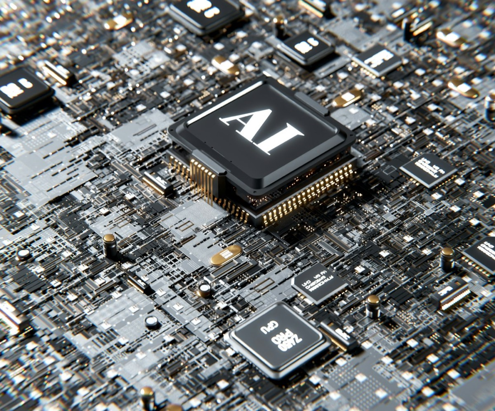
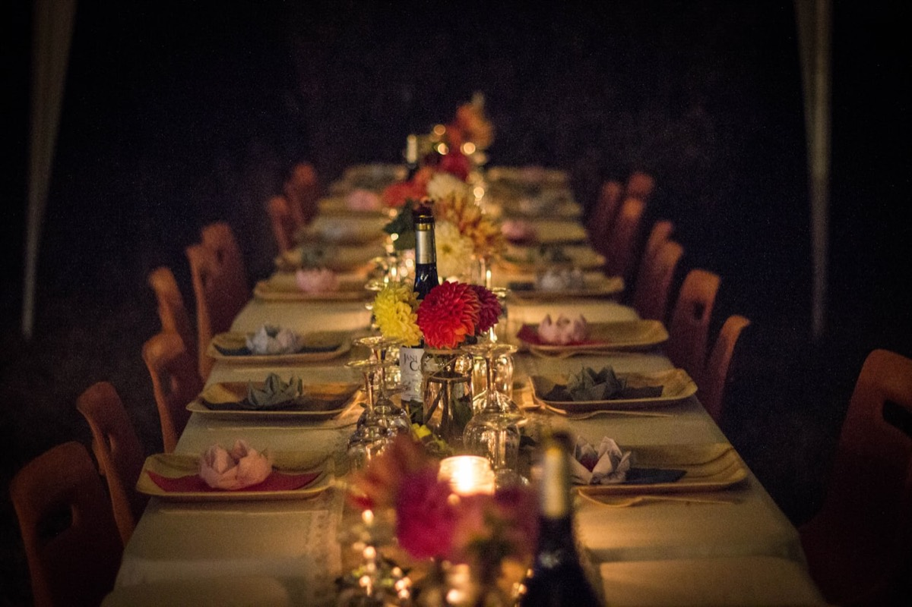
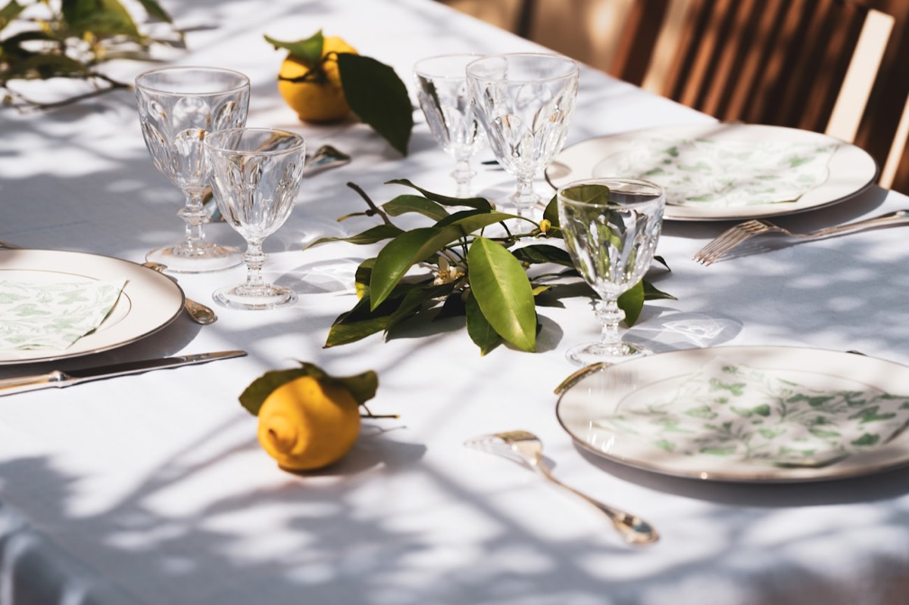
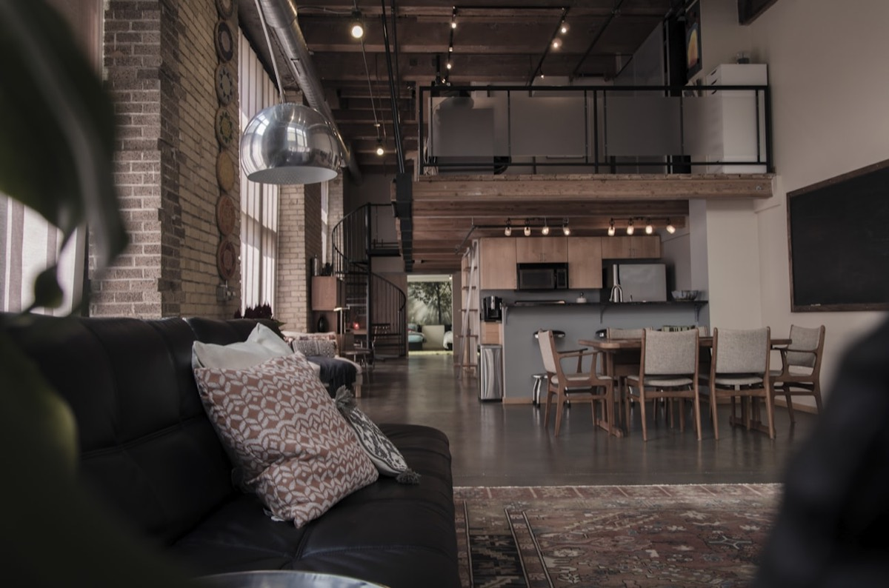
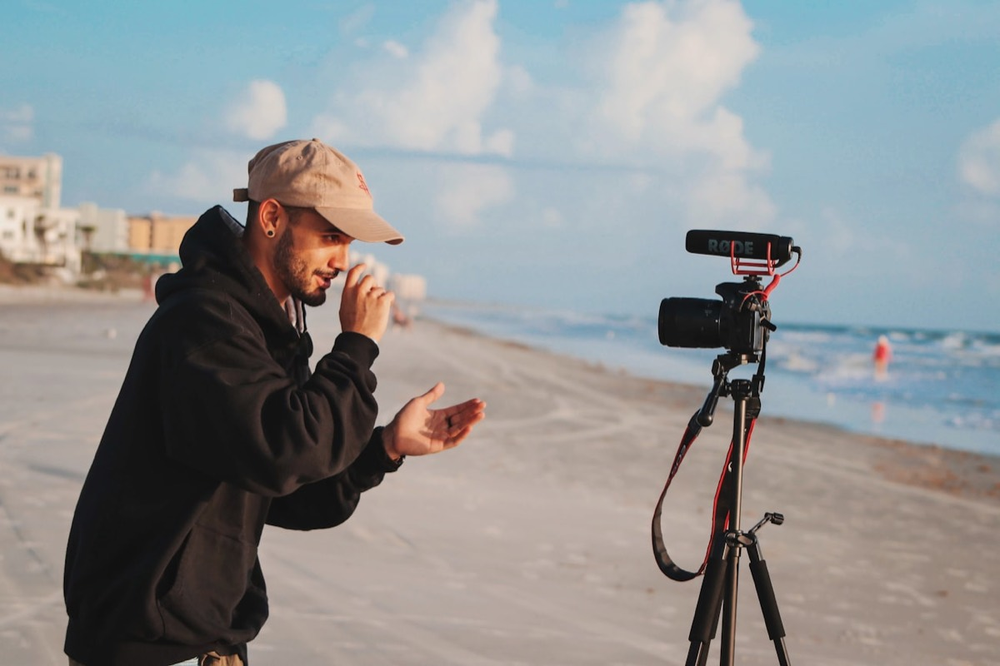
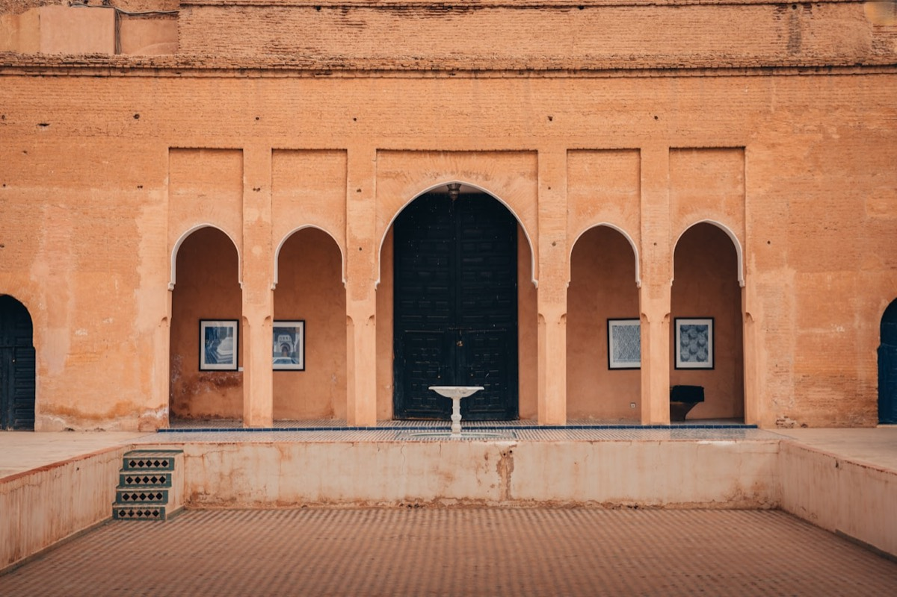

1. L'IA comme co-pilote de production
Disons-le franchement : l'IA a déjà changé notre métier. Pas dans un futur de conférence TED — maintenant, dans nos briefs de mars 2026. Et non, on ne remplace pas les chefs de projet par des algorithmes. On laisse la machine faire ce qu'elle fait de mieux, pour garder notre énergie là où elle compte vraiment : l'émotion.
Premier terrain de jeu : les rétro-plannings. Un brief tombe le lundi, le planning sort le mardi matin — dépendances, deadlines fournisseurs, buffers compris. Ce qui mangeait une demi-journée prend vingt minutes de relecture. Ce temps-là, on le réinjecte là où aucune IA ne nous remplacera : la direction artistique, les repérages, la relation client.
Deuxième terrain : la prédiction de flux. Sur un événement de 500 personnes, on croise données d'inscription, horaires de transport et météo pour anticiper les pics d'affluence. On ajuste la scéno, le catering et le staffing avant le jour J, pas dans la panique de 18h. Moins de sueurs froides, plus de fluidité.
Troisième terrain : la personnalisation du parcours invité. Badges dynamiques, recommandations de sessions en direct, matchmaking entre participants selon leurs affinités : chacun vit son propre événement. L'IA ne remplace pas la créativité — elle la démultiplie. Chez Dare-Dare, c'est exactement notre ligne : un accélérateur, jamais un pilote automatique.

2. Le micro-événement à fort impact
Longtemps, on a mesuré le succès d'un événement au compteur. 300 invités ? Bien. 500 ? Mieux. 1 000 ? Jackpot. En 2026, le calcul s'est inversé. Les marques les plus pointues — luxe, tech, finance — ont compris une chose simple : moins de monde, plus de valeur.
Le micro-événement, c'est 30 invités choisis au cordeau plutôt que 300 badges anonymes. Un dîner dans un lieu qu'on ne trouve pas sur Google, une conversation avec un intervenant de calibre mondial, une expérience sensorielle impossible à dupliquer en grand format. Et comme l'échelle le permet, on soigne tout : le menu pensé assiette par assiette, le plan de table stratégique, le timing à la minute.
Le luxe l'a senti avant tout le monde. Un lancement de collection pour 25 journalistes dans un atelier d'artisan génère plus de retombées qu'une soirée à 800 personnes dans un palace. La raison ? L'exclusivité crée le désir, et le désir crée le contenu. Personne ne partage sur commande. On partage quand on a vécu quelque chose de rare.
Du coup, le ROI change de nature. On ne compte plus les têtes : on pèse la qualité des relations nouées, la durée des conversations, les deals qui tombent dans les semaines qui suivent. Bien produit, un micro-événement devient une machine à convertir. Et pour nous, c'est un terrain de jeu en or : chaque détail compte, chaque moment est chorégraphié, chaque invité repart avec le sentiment d'avoir fait partie du cercle.
3. Le format hybride qui ne fait plus semblant
Soyons honnêtes : l'hybride version 2021-2023, c'était souvent une caméra au fond de la salle et un lien Zoom envoyé la veille. L'audience en ligne se tapait une version dégradée de la vraie soirée. En 2026, cette époque est censée être derrière nous. On va s'en assurer.
Le vrai hybride conçoit deux événements dès le brief. La salle et l'écran partagent un fil rouge, mais chacun a sa dramaturgie, son rythme, ses interactions. Le stream n'est pas une option qu'on coche : c'est un second événement à part entière, avec sa réalisation, son community management en direct et ses contenus que la salle n'aura jamais.
On voit naître des formats où l'audience distante a accès à ce que la salle ne voit pas : interviews backstage, caméras alternatives, Q&A réservés. Le digital arrête de jouer les seconds rôles — il devient une expérience parallèle, parfois plus riche que l'originale. Résultat chez les marques qui investissent vraiment : jusqu'à 40 % d'engagement en ligne en plus qu'avec la bonne vieille « captation simple ».
Pour une agence, ça veut dire doubler la mise : un directeur artistique pour la salle, un réalisateur pour le flux. Plus exigeant à produire, oui. Mais le reach n'a aucune commune mesure : un événement physique de 200 personnes peut en toucher 5 000 en ligne — à condition que le digital mérite, lui aussi, le déplacement.

4. L'écoresponsabilité comme standard, pas comme argument
Il y a trois ans, glisser « écoresponsable » dans un brief, c'était un bonus sympathique. En 2026, c'est un prérequis non négociable. Les clients ne demandent plus « est-ce que vous faites du green ? ». Ils demandent « montrez-moi votre rapport d'impact ». Nuance.
Le zéro déchet a quitté le statut de vœu pieux pour devenir une méthode. Vaisselle réutilisable, signalétique réemployable, traiteur en circuit court, invendus redistribués via des assos. Chaque prestataire passe par la case bilan carbone avant d'être retenu. Le sourcing local n'est plus une coquetterie : c'est un impératif, logistique autant qu'éthique.
Quant à la compensation carbone, on l'a remise à sa place : un complément, pas un alibi. Les marques sérieuses exigent d'abord la réduction à la source — moins de transport, moins de neuf, moins de gaspillage d'énergie — avant même de parler d'offset. Et elles veulent des chiffres, pas des intentions.
Chez Dare-Dare, ça se joue dès la conception. Lieu choisi pour son accessibilité en transports, scénographie modulaire qu'on réutilise, partenaires dans un rayon de 50 km dès que possible. L'écoresponsabilité n'est pas une camisole créative : c'est une contrainte qui force l'ingéniosité. Et franchement, certains de nos événements les plus marquants sont nés exactement de là.

5. Le retour du lieu brut
Longtemps, « premium » rimait avec palace, lustre en cristal et moquette épaisse. En 2026, le luxe a changé de décor. Les lieux qu'on s'arrache ? Des halles industrielles, des rooftops bruts, des cours de ferme, des ateliers d'artistes. Des endroits avec une âme, une texture, une imperfection qu'on assume.
Ce n'est pas une lubie passagère, c'est une faim d'authenticité. Saturés de salles de réception interchangeables, les invités veulent de la surprise, du dépaysement, de l'inattendu. Un dîner sous une verrière industrielle, poutres métalliques apparentes et lumière qui tombe en biais, ça marque autrement qu'un énième salon doré.
L'atout du lieu brut, c'est que le lieu fait le décor. Moins de structures, moins de revêtements, moins de camouflage. On compose avec l'existant et on le révèle : un éclairage chirurgical, une scéno minimale mais ultra-précise. Une pièce florale monumentale au milieu d'un entrepôt vide frappe plus fort qu'une déco complète dans un espace lambda.
C'est précisément notre terrain de chasse. On déniche des lieux que personne n'a encore osé, on les réveille par la lumière et la mise en scène, et on laisse leur caractère faire le reste. Le résultat : des événements photogéniques sous tous les angles, des invités qui découvrent un lieu autant qu'une marque, et un souvenir qui s'imprime bien plus profond.

6. Le contenu natif intégré
En 2026, chaque événement est un studio de contenu. Fini le réflexe d'après-coup (« on prendra deux-trois photos ») : le contenu se pense dès la première réunion. Le parcours invité devient un parcours éditorial — des moments scénarisés pour la captation, des espaces dessinés pour la photo et la vidéo, des angles calés pour les réseaux.
Le photocall, lui aussi, a muté. Exit le kakemono criblé de logos : place aux installations immersives, aux murs végétaux interactifs, aux jeux de miroirs et de lumière qui fabriquent du contenu tout seuls. Les invités ne posent plus devant un fond — ils vivent une scène qu'ils ont envie de partager sans qu'on le leur demande.
Et les créateurs de contenu entrent dans la scénographie. On ne les parque plus dans un coin avec un brief de trois posts : on co-construit avec eux des moments exclusifs, des accès backstage, des formats taillés pour leurs audiences. Un créateur TikTok ne raconte pas un événement comme un journaliste lifestyle — à la scéno de donner à chacun la matière dont il a besoin.
Au bout du compte, l'événement continue de produire pendant des semaines. Stories le soir même, reels le lendemain, articles la semaine d'après, podcasts le mois suivant. Trois heures de physique se transforment en six semaines de visibilité organique. Pour un directeur marketing, c'est un ROI qu'aucun spot publicitaire ne sait égaler.

7. La DMC comme avantage stratégique
DMC : Destination Management Company. Derrière l'acronyme se cache l'un des virages les plus structurants du haut de gamme. En 2026, les marques veulent sortir de leur carte habituelle : Maroc, Lisbonne, Grèce, Dubaï. Et un événement réussi à l'étranger, ça ne se pilote pas depuis un open space parisien. Il faut un réseau local. Pas un contact déniché sur Google — un vrai réseau, tissé année après année.
C'est tout l'enjeu de la DMC : une agence qui connaît le terrain, qui a les bons prestataires, qui maîtrise les autorisations, les codes culturels, les pièges logistiques locaux. Monter un dîner de 100 couverts dans un riad de Marrakech n'a rien à voir avec un restaurant du 8e. Autres délais, autres process, autres attentes.
Dare-Dare opère comme DMC au Maroc — et c'est l'un de nos atouts les plus tranchants. On couvre Casablanca, Marrakech, Rabat, Tanger, Fès et Essaouira avec des équipes sur place, des partenaires de confiance et une connaissance intime du terrain. Un séminaire à Marrakech, un lancement à Tanger : même niveau d'exigence qu'à Paris. Parce qu'on ne sous-traite pas. On opère.
Cette capacité change toute l'équation. Au lieu de jongler entre trois agences — la vôtre, une locale, une de prod — vous avez un seul interlocuteur qui tient la vision créative ET l'exécution terrain. Moins d'intermédiaires, moins de déperdition, plus de cohérence. En 2026, la DMC n'est plus un service en option : c'est l'avantage stratégique qui fait gagner les appels d'offres.
Le fil rouge de 2026
En prenant de la hauteur, un fil rouge relie ces sept tendances : les événements de 2026 sont plus intelligents, plus intimes, plus responsables. Toutes tirent dans le même sens : plus de sens, moins de superflu. Plus de sur-mesure, moins de volume. Plus de singularité, moins de copier-coller.
C'est exactement là qu'on se tient. Notre métier, ce n'est pas de remplir des salles : c'est de créer des moments qui restent. De la production au service de l'émotion, jamais du spectacle pour le spectacle. Si ces tendances vous parlent autant qu'à nous, on a sans doute des choses à bâtir ensemble.